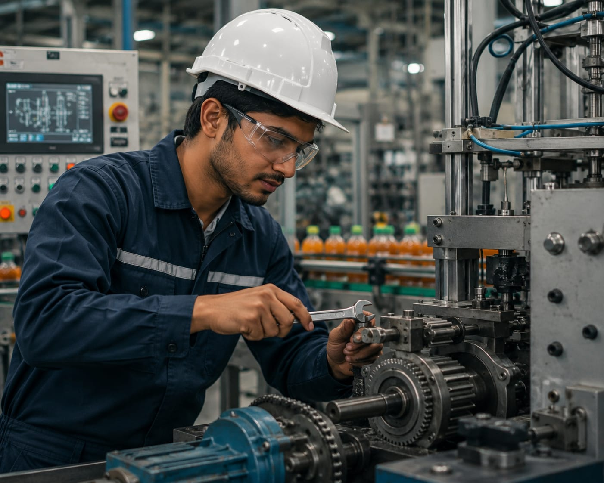

- Imagine a factory that makes soft drinks.
- Thousands of bottles are filled, capped, labelled and packed every day.
- Large machines do most of this work and operate continuously.
- These machines need to be designed, tested, maintained and improved so the production can run smoothly.
- The person who maintains these machines and keep them running efficiently is called a Mechanical Engineer.
- 👉 In simple words: Mechanical Engineers design, maintain, test and improve machines used in various industries.
Mechanical Engineer
What Do They Do?

🎓 How to Become an Mechanical Engineer
You have two options:
-
Start early with a Diploma
After Class 10, you can choose a relevant diploma course. Complete the diploma and join the second year of an engineering course by applying through lateral entry. -
Finish Class 12
Complete Class 11 and 12, then you can do a B.Tech./B.E. in the relevant field.
These courses help students learn machine design, manufacturing processes, industrial equipment, maintenance, and mechanical systems.
Diploma in Mechanical Engineering
Duration: 3 Years
Eligibility: 10th Pass with Mathematics and Science
Entrance Exam: State Polytechnic Entrance Exam
Note: After completing the diploma, students can work as Mechanical Engineering Technicians or continue their studies through lateral entry into B.Tech Mechanical Engineering.
These courses help students learn machine design, manufacturing processes, thermodynamics, industrial automation, and mechanical systems used in modern industries.
B.Tech / B.E. in Mechanical Engineering
Duration: 4 Years
Eligibility: 12th Pass with Physics, Chemistry, and Mathematics (PCM)
Entrance Exam: JEE Main / JEE Advanced / State Engineering Entrance Exams / University Entrance Exams
📝 Exam Details
(Click on the exam name to see full details)
JEE Main JEE Advanced State Engineering Entrance Exams University Entrance ExamsNote: This is the most common pathway to become a Mechanical Engineer and work in manufacturing, automotive, aerospace, energy, robotics, and industrial sectors.
These courses allow diploma holders to directly enter the second year of B.Tech and gain advanced knowledge in machine design, manufacturing, automation, and industrial systems.
B.Tech Lateral Entry in Mechanical Engineering
Duration: 3 Years (Direct Entry into 2nd Year)
Eligibility: Diploma in Mechanical Engineering or a related branch
Entrance Exam: State Lateral Entry Entrance Exams
Note: This pathway helps diploma holders become Mechanical Engineers by directly joining the second year of B.Tech, saving one year of study.
These courses help Mechanical Engineers specialize in advanced areas such as design, manufacturing, robotics, thermal engineering, industrial automation, and research.
M.Tech / M.E. in Mechanical Engineering
Duration: 2 Years
Eligibility: B.E. / B.Tech in Mechanical Engineering or a related branch
Entrance Exam: GATE / University Postgraduate Entrance Exams
Note: Higher studies can help Mechanical Engineers move into research, advanced design, teaching, leadership roles, and specialized engineering fields.
Note:
(Age limits, marks, and admission process may vary depending on the college or state.
Below are some colleges that offer these courses.
These courses are available in many colleges and universities across India. You can choose colleges based on your location, budget, and entrance exams.)
🏛️ Colleges offering these courses in India
(Tap on a college to view the details)
After Class 10
Government Polytechnic, Mumbai PSG Polytechnic College, Coimbatore Government Polytechnic College, Kalamassery Government Polytechnic, CoimbatoreAfter Class 12
Indian Institute of Technology (IIT) Madras, Chennai Indian Institute of Technology (IIT) Delhi, New Delhi Vellore Institute of Technology (VIT), Vellore, Tamil Nadu National Institute of Technology (NIT) Trichy, TiruchirappalliSTEP 1
Imagine you are working as a Mechanical Engineer in a power plant.
STEP 2
The plant uses large machines to generate electricity for thousands of homes.
STEP 3
Your job is to make sure all the machines are operating safely and efficiently.
STEP 4
You inspect turbines, pumps, compressors, and other equipment.
STEP 5
You identify problems and repair faulty machine parts.
STEP 6
You help improve machine performance and reduce energy waste.
STEP 7
You ensure a continuous supply of electricity without interruptions.
STEP 8
If you enjoy machines, engineering, and solving technical problems, this career may be right for you.
Where do Mechanical Engineers work? (Job Roles + Growth)
Mechanical Engineers work in : Manufacturing plants, Automobile and vehicle industries, Power plants, Machinery and equipment companies, Aerospace and aviation industries, Robotics & automation companies, Construction and engineering projects, Oil & gas industries, and research and development centers.
🟢 Beginner Roles
Graduate Engineer Trainee (GET)
(After B.Tech)
Learns factory operations and assists senior engineers.
Junior CAD / Design Engineer
(After Diploma / B.Tech)
Creates technical drawings and 3D machine designs.
🔵 Mid-Level Roles
Mechanical Design Engineer
(After Experience)
Designs machines, parts, and mechanical systems.
Production / Plant Engineer
(After Experience)
Keeps factory machines running smoothly.
🟣 Advanced Roles
Senior Mechanical Engineer
(After Advanced Experience)
Leads engineering projects and solves complex problems.
Engineering Manager
(After Specialization + Experience)
Manages engineering teams, projects, and budgets.
Manufacturing Companies
Produce machines, tools, and industrial equipment.
Automobile Companies
Design and manufacture cars, trucks, and vehicles.
Aerospace Companies
Build aircraft, spacecraft, and aviation systems.
Energy & Power Companies
Develop power plants and energy systems.
Industrial Automation & Robotics Companies
Create robots and automated manufacturing systems.
Construction & Heavy Equipment Companies
Design and maintain large construction machinery.
(Click Yes or No for each question)
1. Are you interested in working with machines?
2. When you see soft drinks like Coca-Cola or Pepsi, have you ever wondered how they are packed?
3. Are you interested in learning how machines are used to manufacture products in factories?
4. Imagine you are working as a Mechanical Engineer in a company that builds elevators. Your job is to design the mechanical parts that help the elevator move up and down safely. Are you interested in doing this type of work?
5. Imagine you are working in a factory that produces soft drinks. Your job is to make sure the machines are working properly. If a machine becomes slow or stops working, you find the problem and fix it so that thousands of bottles can be packed every day. Does this sound exciting to you?